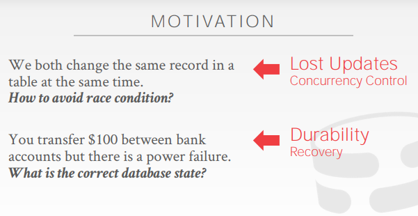
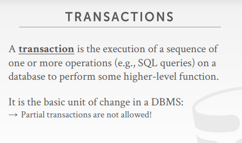

Motivation
多个事务对于同一条数据进行修改
- 可能会出现竞争、更新丢失的问题
执行多条语句（事务）的时候机房发生断电，该如何处理
- 持久化（durability）的问题，需要恢复（recovery）解决

并发控制（concurrency control）和恢复（recovery）是基于ACID的非常重要的功能
Transactions
定义：事务是执行一系列操作（SQL语句），以达到一个高级的功能（比如说通过SQL语句对账户的余额增减，以实现转账的功能）
比如说转账：
- 先检查A账户有没有100块钱
- 如果有的话，就减去100块钱；否则就报错
- 然后给B账户加100块钱
PS：如果没有显式的说明事务的话，那么一条SQL语句就会被认为是一个事务
一些想当然的想法：
- 事务串行化执行（能够保证事务的正确性，但是串行化执行效率低下）
- 或者事务执行的时候，把整个数据库备份一个出来（能提高并发度，但问题是内存会因为数据库的不断备份导致内存不够，并且磁盘大小也会受限）
- 如果语句执行成功了，就把新的数据覆盖到原数据中
- 否则，就丢弃当前备份出来的数据
DBMS的需求：
- 更高的时空利用率和并发吞吐量
- 提高DBMS的响应时间
- 事务能够并发的执行，并且维持ACID的性质
- 要维护事务的正确性和公平性
- 如果不设限的话，并发的事务会存在临时性的数据错误和永久性的数据错误
问题：
- 数据库只知道数据的读写，不知道事务的逻辑，不知道事务整体是干什么的
- 不受限的并发会导致数据的错误，所以需要一个控制协议让DBMS能够正确的执行并发
简化问题：
- 研究事务不需要知道数据具体放在哪儿
- 事务的研究本质上就是研究数据的读和写（简化模型）
Transaction in SQL
begin是告诉DBMS事务开始
commit是告诉DBMS事务结束（或者rollback，abort回滚事务）
- abort有可能是事务本身发出的，也有可能是DBMS发出的
ACID
atomicity（原子性）：all or nothing
- 事务要么都执行，要么都不执行
consistency（一致性）：it looks correct to me
- 比如说两个人的总账户金额为200，A给B转账100后，总金额发生了变化，那就失去了一致性
isolation（隔离性）：as if alone
- 理想的隔离性是指好像数据库中只有这一条事务在操作一样（我做的操作别人看不见，别人做的我也看不见）
- 存在现实的妥协（不同业务场景有不同的隔离需求）
durability（持久性）：survive failures
- 事务提交后，它的更新应该是持久的，不能说一停电事务就更新失败了
Atomicity
All actions in the txn happen, or none happen
事务只有两种结局：
- 所有的SQL语句都执行完了，事务都提交了
- abort终止了，客户端或DBMS终止
从业务者的角度来看：所有的SQL要么全部执行，要么一个都没有执行（DBMS对部分执行的事务进行回滚）
而实现Atomicity有以下两种主流的方法：shadow paging和logging
shadow paging
事务需要对哪些页进行修改，就将哪些页备份出来
事务如果commit的话，就将修改好的页替换
如果abort的话，即需要回滚，就把一开始备份数据页替换回去
PS：因为比较浪费空间，所以很少有数据库使用这种方法
logging
事务每执行一步，都需要记录将当前的操作先记录到日志上（即undo log）
如果哪一步需要回滚，那就按照undo log，一步一步的将数据回滚，撤回数据
日志的作用（优点）：
- 维护事务的原子性（如果事务执行到一般被abort的话，就用日志来回滚当前的数据）
- 监控审计的作用，查看SQL语句到底对DB做了什么，监控的作用
- 提高运行的效率（提高性能），因为往往对数据的操作都是随机读写，如果io的性能不行的话，可以把要做的操作先写入日志，写日志是顺序写，效率高，后续在按照顺序把文件的操作一点一点的写入磁盘中，就不需要在当时让用户卡住，随机读写而造成效率低下
PS：几乎每个DBMS都用它，是一种主流的实现方法
Consistency
If each txn is consistent and the DB starts consistent, then it ends up consistent
逻辑上说得通的（make sense）
一致性分为数据库（数据）一致性（后面发生的事务要能够看到前面发生事务的数据）和事务一致性
- 数据库一致性是ACID所保证的（ACID中的C是由AID共同保证的）
- 如果处理不当就会有写写冲突（用户的本意是好的，但在并发执行的时候不上锁，导致了错误）
- 而事务一致性是依靠业务（SQL语句）保证的
- 比如说转账系统，A给B转账100，但是你的SQL写的却是给A减一百，给B加了150，事务的一致性就出问题了
- 再比如说A+B<100，那么我们的SQL处理A和B的时候，都要先读取A和B的值，然后在判断下一步如何处理数据（这些操作都是要写到SQL中的）
如何判断数据库一致性：执行后的结果和串行化的结果是等效的
正确的一致性：

错误的一致性（有100块钱少算了利息）：

Isolation
Execution of one txn is isolated from that of other txns
好像就只有一个人在使用数据库一样，别人提交的修改我也看不见，数据就和事务刚开始的时候一样
当某个事务出现问题的时候，不能影响其他的事务（注意串行会影响性能）
最理想的隔离性：别人的操作我都看不到
为什么需要隔离性：
- 写业务的时候方便（转账只考虑A和B的关系即可，不用考虑别的事情），为了能让用户更好更方便的实现它的业务
- 即用户可不管这些其他的情况，专心于自身的业务；如果失败了，DBMS就会直接告诉你失败了，然后重新再做即可
所以需要设计一种协议，实际上让多个事务能够同时跑起来，但是又能够让用户感觉好像只有他自己的事务在跑一样
也就是并发控制协议：决定用什么顺序让多个事务穿插的执行
并发协议的两大流派：
- pessimistic：悲观类，不让问题发生，在问题发生之前就让他停下来
- optimistic：乐观类，假设冲突是非常有限的，在真正出问题的地方回滚
思考：
- 从转账的例子发现有些事务的并发顺序是正确的，而有些是错误的，那DBMS如何知道事务是否正确呢？怎样给数据库设置一种算法，证明数据的正确性？
- 解：如果一种并发执行的安排执行后是等效于串行化的话，就是正确的
串行化（serial schedule）
serial schedule（串行化执行，真串行）
equivalent schedule（等效执行）
- 如果两种执行的顺序的结果是等效的话，那就说明它们是等效的执行安排
serializable schedule（可串行化，该执行顺序和真正的串行是等效执行）
- 这种执行方式安排和真串行是等效的
- 使用这种串行，既可以提高并发度，又可以给数据库的执行更多灵活性
问题转化为如何证明某种执行顺序是可串行化的
冲突的操作（conflicting operations）
两个操作是冲突的意味着：
- 操作是来自不同的事务
- 两个操作都在操作同一个数据，并且其中一个操作是写
主要分为：读写冲突、写读冲突和写写冲突
读写冲突（不可重复读 unrepeatable read）

T1第一次读的数据是10，T2修改为19（事务B将数据修改后并提交了），T1第二次读的时候就变为了19，破坏了隔离性
即对一个数据重复读，发现前后不一致
不可重复读侧重的是在当前事务中，对一个数据的重复读，数据发生了不同
而这个不同是因为在当前事务的执行过程中，有其他的事务对数据进行了修改并提交
写读冲突（读未提交 reading uncommited data 脏读 dirty reads）

T1修改了数据a（但是还没有提交事务），T2读取数据的时候读到的数据是T1修改过后的，读到了未提交的数据
即读到了一个没有提交的值（如果T1发生了回滚，那么T2读到的就是一个脏数据）
读未提交（脏读）侧重的是读到的是未提交的数据，即脏读读到的数据是还没有committed的
写写冲突（overwriting uncommited data）

T1写了数据a，T2又写了数据a，导致T1的操作被覆盖了
数据A和数据B的结果分别是两个不同的事务带来的，这就会造成数据的不一致
其中一种情况是数据的一致性遭到了破坏，比如说X和Y的账户余额都是50，他们的总和是100
T1读取X的余额是50，然后T2从X转账50到Y然后提交
T1在T2提交后读Y发现余额为100，那么它们总和变成了150
最终导致T1读数据的结果违反数据的一致性，又叫做读偏斜（read skew）

而另一种情况也会破坏数据的一致性，即有约束A+B<=100，A=70，B=20
此时T1、T2都读到了A=70，B=20
然后T1改为A=75（从T1的角度来说没问题），T2改为B=30（单从T2的角度来说没问题）
可是数据的一致性约束就被破坏了（其实是因为此前读入作为一致性保证的前提数据，被其他的事务修改了）
又叫做写偏斜（write skew）
还有一种情况是：（不是写写冲突，但还是想提一下）
| sessionA | sessionB |
|---|---|
| begin // 开启事务 | |
| begin // 开启事务 | |
| update user set username=“张三” where id=5; | |
| commit // 提交事务 | |
| update user set username=“李四” where id=5; | |
| ROllBACK; |
此时的sessionB为了避免脏读，那么就会选择读原始数据
可问题是如果sessionA提交了以后，sessionB发生了回滚
数据就会被回滚到sessionA和sessionB之前的数据，那么sessionA的修改就被cover掉
即会导致前一个事务的修改失效，这种情况又叫作脏写
写写冲突不仅会造成数据一致性的缺失，还可能会造成事务的cover
PS：一切概念以15-445为准（比如啥写倾斜，读偏斜，都可以根据冲突进行分类）
串行化
基于冲突的串行化（conflict serializability），大多数DBMS都是基于此做的可串行化
- 如果两个序列的事务是相同的，包含的事务是相同的，产生的冲突是一样的，便可认为是冲突等效
- 还有一种等效，即移动SQL语句执行的时机，如果两个序列的结果依然等效的话
基于观察的串行化（view serializability），没有DBMS可以基于此做
总结：
- 前面的三种冲突是不可以交换顺序的，因为交换顺序后，语义就发生了变化
- 那就是说，除了上述的冲突外，其他的语句是可以交换顺序的，所以为了提高并发度，我们可以先给定一个串行化的操作，然后再排除掉上述的三种冲突以外的情况下，交换语句的顺序，以此获得更高的并发度
- 所以优化的思路就是通过调整事务语句的顺序，获取串行化的同时，又能提高并发度
- 这么说，不同的隔离级别本质上是根据场景分别解决不同的冲突问题
依赖图（dependency graphs）
如果冲突之间形成的关系成环了，就不能转变为串行化，就代表当前的执行顺序不能等效为串行化执行
比如事务A和事务B之间发生了写读冲突，就在事务A上画一条边到事务B上
- 这个边就是说一个操作一定要在另一个操作之前发生
- 注意是先发生的事务指向后发生的事务

如果几个事务的依赖图形成的图：
出现了环，就代表永远无法通过滑动语句以实现串行化
没有成环，就代表其是可串行化的，即最后的效果等价于串行化
view serializability
根据业务的需求，发现有些情况虽然是成环的，但还是可以等效串行化执行
因此依赖图的做法，可能真的会误判一些隐藏的可串行化的情况
所以view的可串行化范围是大于conflict的，但是编程无法实现
即基于观察的串行化也是有效的，但是难以实现
view serializability 和 conflict serializability都没法做到完全识别出所有的可串行化，主要是因为数据库没法做到理解数据库的业务
比如说下图，虽然依赖图成环了，但是数据A的结果，其实最后就是T3的结果，前面是否覆盖都不重要，所以它也是可串行化的：


基于conflict serializability画依赖图的做法是绝大部分的DBMS都在用的（主要是容易实现）
当然也可以做一些优化，比如说都是只读的事务的话，就直接操作就好了

Durability
If a txn commits, its effects persist
事务的持久性
所有的事务的语句，都必须持久化到磁盘中，不存在事务只更新到一半的情况，也不能有部分事务数据留下来的（失败的数据）的情况
主要通过logging（redo log）或shadow paging来实现的
Conclusion
并发控制和恢复是数据库最重要的功能
部分数据库是不支持事务，要么全部的操作全部转为可并发的，要么就是自己去判断有没有问题，要么就是在业务里面加锁
谷歌著名论文设计spanner，很多新的数据库的思路，比如tidb等start up，都是出自这篇论文